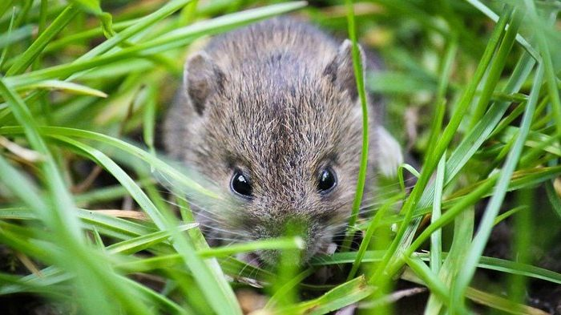
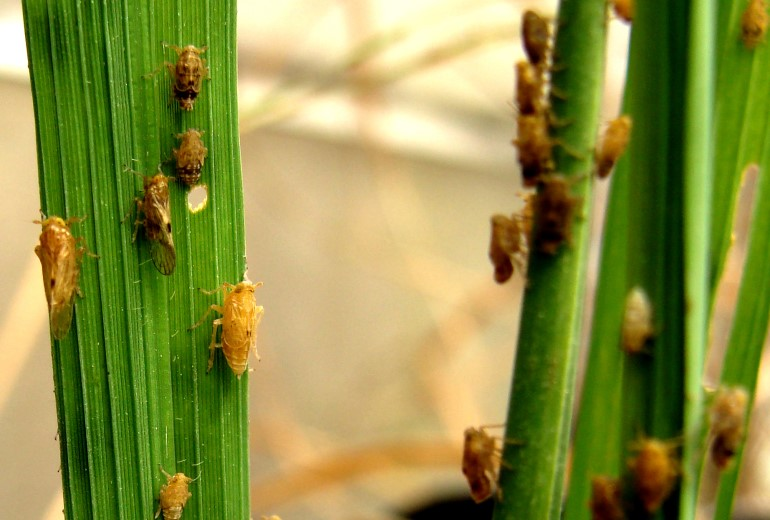
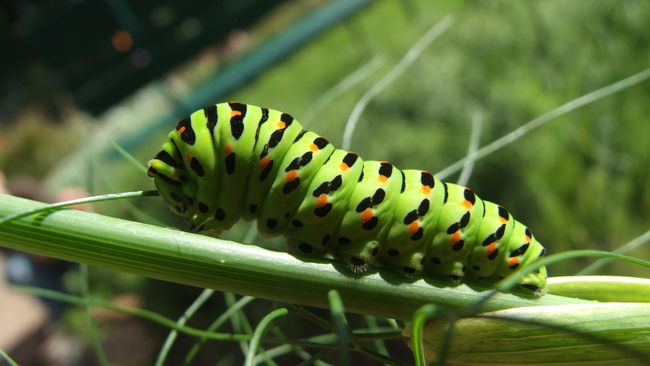
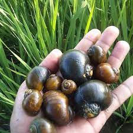
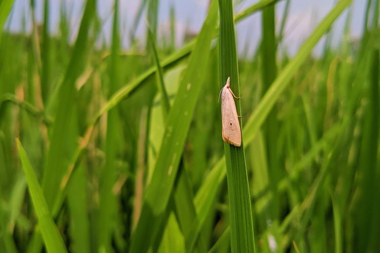

Hama merupakan hewan yang seringkali menyerang atau menggangu tanaman, sehingga tanaman tidak dapat berkembang dengan optimal. Terdapat banyak jenis hama dan penyakit pada tanaman yang perlu kita ketahui, sebagai berikut:
1. Tikus
Hama dan penyakit tanaman tentunya memang sangat merugikan bagi petani. Salah satu hama yang paling banyak merugikan petani adalah tikus. Hal ini disebabkan karena tikus memiliki mobilitas yang tinggi serta daya adaptasi dan perkembangbiakan yang juga sangat tinggi. Tikus biasanya menyerang tanaman padi, dan sering bergerak pada malam hari. Biasanya target utama tikus dalam menyerang padi adalah biji dan batangnya. Dengan giginya yang tajam, tikus dapat memakan biji-bijian padi. Biasanya tikus membuat lubang didekat sawah dan bersembunyi diantara semak-semak. Kamu bisa mengendalikan hama satu ini dengan beberapa cara, yaitu:
- - Menutup lubang yang ada disekitar sawah yang digunakan sebagai tempat persembunyian, lalu menangkap tikus
- - Gunakan ular yang sudah dijinakkan untuk mengusir atau memangsa tikus.
- - Menggunakan pembasmi tikus atau umpan beracun, namun dalam menerapkan cara ini harus berhati-hati
2. Wereng
Hama selanjutnya adalah hama wereng. Wereng biasanya menyerang daun dan batang pada tumbuhan sehingga menyebabkan tumbuhan tersebut menjadi mati. Hama wereng ini menjadi salah satu penyebar virus yang menyebabkan penyakit tungro.Adapun cara untuk menangani hama wereng adalah sebagai berikut:
- - Mengatur Pola Tanam pada tanaman dengan melakukan penanaman bersamaan atau bergilir untuk memutus siklus hidup hama wereng.
- - Menggunakan Predator seperti kumbang Paederuss fuscipes, Ophinea nigrofasciata dan laba-laba Lycosa Pseudoannulata.
- - Menggunakan insektisida. Namun cara ini harus dilakukan dengan efisien dan tetap dengan menjaga lingkungan.
3. Ulat
Hama selanjutnya adalah ulat. Biasanya ulat akan memakan daun serta batang tumbuhan. Hal ini bahkan mungkin sering kamu lihat di lingkungan sekitar. Cara mengatasi hama ulat ini adalah sebagai berikut:
- - Mengecek bagian bawah daun, apabila terdapat telur kupu berwarna putih maka segera dibersihkan
- - Genangilah tempat persemaian dengan air agar ulat naik ke atas dan mudah untuk dibasmi
- - Apabila cara sebelumnya tidak efektif, maka opsi terakhir adalah dengan menggunakan pestisida
4. Walang sangit
Walang sangit merupakan salah satu hama yang cukup meresahkan para petani. Walang sangit dapat merusak tanaman dengan meloncat ataupun terbang dari satu tanaman ke tanaman lain sambil mengeluarkan bau yang tidak sedap.Adapun cara mengendalikan hama walang sangit adalah sebagai berikut: Menerapkan sistem tanam serentak Menjaga kebersihan sawah dari rumput liar Menangkap walang sangit Menggunakan predator seperti laba-laba Menanam jamur yang memberikan efek bagi walang sangit Menggunakan insektisida
5. Keong mas
Hama keong mas merupakan hama yang tidak asing lagi bagi petani. Hama ini merusak tanaman padi dengan cara memarut jaringan tanaman dan memakannya dan menyebabkan adanya bibit yang hilang di pertanaman. Pada umumnya keong mas memakan tanaman muda yang baru ditanam. Adapun cara mengatasi hama keong mas, yaitu:
- - Mengumpulkan telur dan keong mas
- - Memasang penghalang plastik pada persemaian
- - Melakukan penyulaman tanam
- - Memasang tongkat atau kayu pada tanaman
- - Membuat parit di sekitar tanaman
- - Melepas bebek
- - Memasang saringan pada saluran masuk
- - Memasang umpan
- - Pola tanam
- - Pestisida nabati
- - Cara kimia
6. Penggerek batang
Penggerek batang padi adalah salah satu hama yang palig sering menyerang tanaman padi dengan intensitas serangan sampai 90%. Hama ini menyerang tanaman padi pada berbagai fase pertumbuhan mulai dari fase vegetatif sampai generatif. Adapun cara mengatisi hama penggerek batang ini, yaitu:
- - Pengaturan pola tanam
- - Pengendalian secara fisik dan mekanik
- - Pengendalian hayati
- - Pengendalian kimiawi